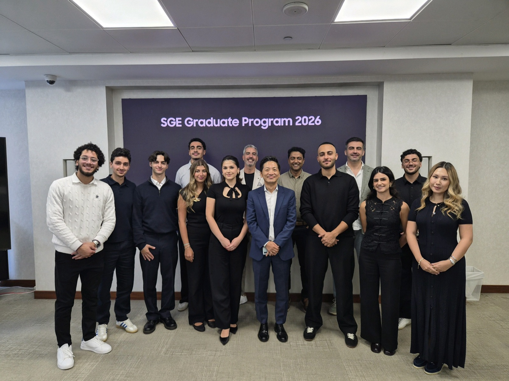
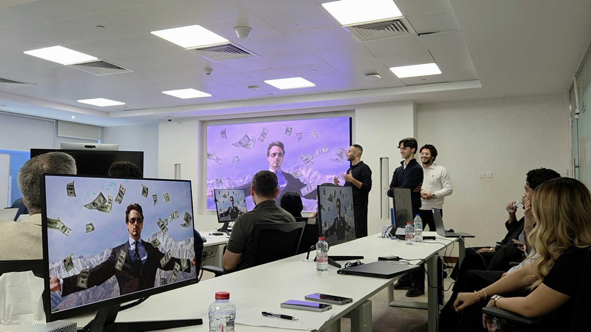

Computer engineer. I build AI products and automate the work around them.
I studied computer engineering at the American University of Sharjah. Since my first internship I've been doing the same thing in different places: finding work that people do by hand and building the software that does it for them.
From the first lecture to the job I hold today, in order.
2022 to 2025
American University of Sharjah
BSc, Computer Engineering
Where it started. Four years of software, operating systems, digital electronics and machine learning, and the place I learned I like building things people use.
Merit scholarship
Dean's List
Graduated December 2025
C and C++
Python
Java
Web development
Machine learning
Summer 2023
TriForce Systems, Cairo
Digital Transformation Intern
My first job, and my first taste of automation: taking a task people did by hand and making software do it.
Built four automation systems for client organisations
Helped launch three robotic process automations
Wrote the process documents and user manuals
Cut manual work by 40% and costs by 20%
Robotic process automation
UiPath
Process mapping
2024 to 2025
Research and robotics at AUS
Machine learning research assistant, and rover team member
Two things outside class. In the Future Thought Leaders program I built a language model that detects signs of mental illness in online posts. On the Rubu' Qarn mission team I helped build a 75 kg autonomous rover.
Language model: data cleaning, features and validation
Rover: LiDAR, cameras and robotic arms, 95% navigation and sample accuracy
More than 200 hours of robotics and software work
NLP
Hugging Face
ROS
Linux
2025
TRACE, with Dubai Police
Senior design project, team leader
My graduation project: one forensic tool that analyses crime scene photos, classifies injuries from medical images and estimates time of death. I led a team of four.
Built the backend that serves the models
Trained the injury model to over 90% accuracy
Added AI-drafted forensic reports
FastAPI
ResNet
Transfer learning
OpenAI API
Team leadership
Summer 2025
Schneider Electric, Dubai
Global Supply Chain Intern, NextGen program
Supply chain runs on recurring reports. I automated three of the ones the team rebuilt by hand.
Automated the Back Order Lines, FIFO and Shipment Tracking reports
Cut the manual work on them by 70%
Worked on a project to reduce delays in outbound logistics
VB.NET
Excel macros
Supply chain data
Late 2025
Henkel, Dubai
Regional Purchasing Intern
A short stint in regional purchasing, where I looked for the manual steps that could be automated.
Supported the regional purchasing team with supplier and order data
Automated recurring spreadsheet work
Purchasing data
Excel automation
Dec 2025 to now
Samsung Gulf Electronics, Dubai
Graduate program, two roles at the same time
Where everything above came together: product thinking, automation and AI, on one team.
Senior Product Management Associate
Weekly sell-out, price index and shelf-share analysis across the Gulf
Market-share data for a team of 18
Promo spend modelling with price elasticity
Report automation that cut preparation time by 33%
Senior AI Engineer Associate
An AI sales coaching product, shipped to production
A voice assistant for shoppers
Vision AI that reads promo leaflets
Guardrails, data redaction and spend caps
Python
TypeScript
PostgreSQL
Claude and OpenAI APIs
Product management
Power BI

SGE presidentMe
The graduate program, class of 2026.

Our team, mid-pitch
Pitch day, presenting our sales coaching product to the SGE president. Tap the money slide.
I work in Python, TypeScript, Node.js, SQL and PostgreSQL, with the Claude and OpenAI APIs, retrieval, voice and vision models, FastAPI, Docker, Power BI and Excel. English and Arabic.
ProjectsNine working demos
Projects
This phone runs small working copies of things I've built, on made-up data. Open an app to try it.
9:41
Ahmed's workOpen an app. Each one is a working copy.
Pick up the phone.
Every app on it is a small working copy of something I built, running on made-up data. Open one and its story shows up here, with the real numbers and screenshots.
Record a sales conversation and watch it get scored
Ask a talking fridge for the price and see what it does
Drive the rover and beat your own score
SalesLens
AI sales coaching for store promoters
Promoters record a real customer conversation on their phone. SalesLens transcribes it, removes personal details, scores each stage of the sale and says why the sale was lost. Then it trains the promoter with short daily lessons and AI customers they can practise on by voice, in English and Arabic.
Record
Transcribe
Remove personal data
Score with Claude
Coach and train
Node.js, Claude API, OpenAI speech models, role-based accounts
Livein production
429automated tests
100training lessons
24AI customers to practise on
AI Promoter
A voice assistant shoppers open with a QR code
A shopper scans the code in store and a talking assistant opens on their own phone. It asks what they need, recommends the right appliance and answers questions out loud. The server checks every reply before it is spoken: no prices, no competitor names, and no claim the spec sheet doesn't back.
Scan the QR code
Listen
Search the product knowledge
Check the reply
Speak
TypeScript, Node.js, PostgreSQL, Claude API with prompt caching, OpenAI speech, WebSockets
2.5 sto start answering
43appliance models
6,300knowledge passages
Hard capon yearly AI spend
Promo intelligence pipeline
Vision AI that reads retailer leaflets
Retailers across the Gulf publish promo booklets every week. This pipeline picks them up from email, finds the pages with appliances, reads the price, the old price and the model code from each offer, checks the codes against the model list and emails the team a finished pricing report.
Booklets arrive by email
Find appliance pages
Read each offer
Check model codes
Email the report
Python, vision language models, OCR, scheduled runs on a locked-down work laptop
160 / 160products found in evaluation
6Gulf markets
26weeks checked by hand
Weeklyreport by email
Market intelligence dashboard
One file for sell-out, price index, shelf share and promos
I own the market-share data for the home appliances team: I map the raw sell-out data every week and it becomes the single source for everyone's reporting. The dashboard puts that next to price index, shelf share and promo pricing in one self-contained file, because company data rules don't allow a hosted app.
Map raw sell-out
Join price index, shelf share, promos
Build one offline file
Share weekly
Python, self-contained HTML and JavaScript, Excel, Power BI
8weekly Excel reports replaced
50,000rows mapped each week
6markets, 10 retailers
18people use it
Store operators' app
Incentives and stock, for people on the shop floor
A tool for operators in partner stores. They use it to track the incentives they've earned and to report when a product is running low, so the team hears about it before the shelf is empty.
Operator opens the app
Checks incentives
Reports low stock
Team follows up
Promo optimization tool
Where does promo money work hardest?
A Python model built on price elasticity: how much more of a product sells when its price drops. It simulates different ways of splitting the promo budget and shows which products repay a discount and which don't.
Sales history
Estimate elasticity per product
Simulate the budget split
Recommend where to spend
8 to 12%potential efficiency gain
Pythonmodel and simulation
TRACE
A forensic AI tool, built with Dubai Police as the end user
My senior design project. I led a team of four building one tool for three forensic jobs: analysing crime scene photos, classifying injuries from medical images and estimating time of death. I built the backend and trained the injury model.
Upload evidence
Run the models
Review the findings
Draft the report
Python, FastAPI, ResNet with transfer learning, OpenAI API
90%+injury classification accuracy
4people, and I led the team
3forensic tools in one
2025senior design project
Autonomous space rover
Built with the AUS team for the Rubu' Qarn mission program
A 75 kg rover that finds its own way and collects samples. It carries LiDAR, cameras and robotic arms, and runs on ROS. I spent more than 200 hours on its robotics and software.
75 kgrover
95%navigation and sample accuracy
200+hours of build time
Mental-health signals in text
Machine learning research at AUS
As a research assistant in the Future Thought Leaders program, I built a language model that reads online posts and detects signs of mental illness, covering the data cleaning, the features and the validation.